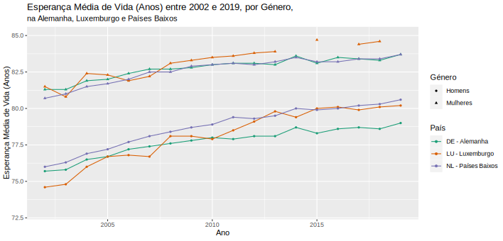

Diogo Correia - 99211
Projeto Computacional - Probabilidade e Estatística
Pergunta 2
library("openxlsx")
library("ggplot2")
library("stringr")
library("tidyr")
library("dplyr")
df <- read.xlsx(xlsxFile = "EsperancaVida.xlsx", sheet = 1, rows = c(9:70))
names(df)[1] <- "year"
names(df) <- str_replace_all(names(df), "\\.", " ")
names(df)[2:35] <- paste(names(df)[2:35], c(" (Total)"))
names(df)[36:69] <- paste(names(df)[36:69], c(" (Homens)"))
names(df)[70:103] <- paste(names(df)[70:103], c(" (Mulheres)"))
df <- df[c(1, 36:103)] %>%
{pivot_longer(., all_of(names(.)[2:69]), names_to = "country", values_to = "esp_vida")} %>%
transform(country_code = str_replace(country, " - .+", "")) %>%
transform(type = str_match(country, "\\((\\w+)\\)$")) %>%
transform(country_dn = str_replace(country, "\\((\\w+)\\)$", ""))
df[df$`country_code` %in% c("NL", "LU", "DE"), ] %>%
filter(year >= 2002 & year <= 2019) %>%
transform(esp_vida = ifelse(esp_vida == 0, NA, esp_vida)) %>%
na.omit() %>%
ggplot(aes(x = year, y = esp_vida, color = country_dn, shape = `type.2`)) +
geom_line(na.rm = TRUE) +
geom_point(size = 1.2, na.rm = TRUE) +
scale_color_brewer(palette = "Dark2") +
xlab("Ano") +
ylab("Esperança Média de Vida (Anos)") +
labs(color = "País", shape = "Sexo", subtitle = "na Alemanha, Luxemburgo e Países Baixos") +
ggtitle("Esperança Média de Vida (Anos) entre 2002 e 2019, por sexo,") +
ylim(73, 86)

Pelo gráfico temporal obtido, há uma clara distinção entre a esperança média de vida entre sexos: as mulheres têm valores superiores nos 3 países analizados.
Reparamos também é que a tendência é crescente, isto é, a esperança média de vida aumenta ao longo do tempo.
Entre países, no mesmo género, há pouca diferença no valor da esperança média de vida: nos homens, a Alemanha tem um valor ligeiramente inferior tanto ao Luxemburgo como aos Países baixos; nas mulheres, o Luxemburgo tem um valor ligeiramente superior tanto à Alemanha como aos Países Baixos.